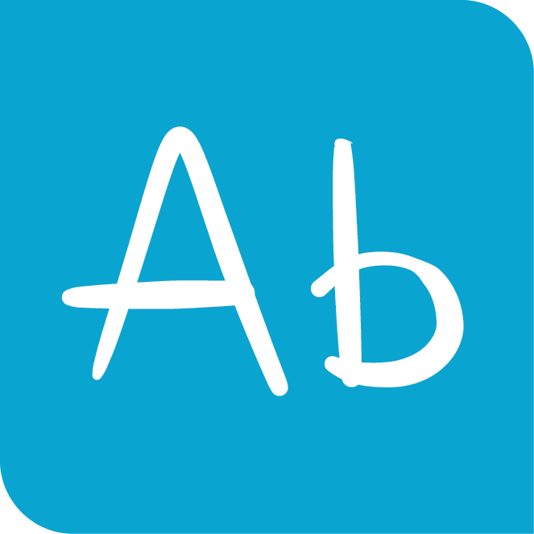
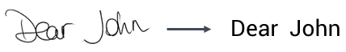

MyScript Cloud can recognize handwritten text and transform it into digital text.

For more information on how MyScript recognizes handwriting, see the appendix.
The below example shows a text recognition request where the following are to be specified:
<script>
var result = document.getElementById("text-result");
var canvas = document.getElementById("text-canvas");
var context = canvas.getContext("2d");
var pointerId;
var url = 'http://cloud.myscript.com/api/v3.0/recognition/rest';
var applicationKey = 'xxxxxxxx-xxxx-xxxx-xxxx-xxxxxxxxxxxx';
var hmacKey = 'xxxxxxxx-xxxx-xxxx-xxxx-xxxxxxxxxxxx';
var textRecognizer = new MyScript.TextRecognizer(url);
textRecognizer.getParameters().setLanguage('xx_XX');
var instanceId;
function doRecognition () {
var inputUnit = new MyScript.TextInputUnit();
inputUnit.setComponents(stroker.getStrokes());
var units = [inputUnit];
textRecognizer.doSimpleRecognition(applicationKey, instanceId, units, hmacKey).then(
function (data) {
if (!instanceId) {
instanceId = data.getInstanceId();
} else if (instanceId !== data.getInstanceId()) {
return;
}
result.innerText = JSON.stringify(data.getTextDocument());
}
)
}
var stroker = new MyScript.Stroker();
var renderingParameters = new MyScript.RenderingParameters();
var textRenderer = new MyScript.TextRenderer();
function onPointerDown (event, x, y) {
textRenderer.drawStart(event, x, y);
stroker.startStrokeWriting(x, y);
}
function onPointerMove (event, x, y) {
textRenderer.drawContinue(event, x, y, renderingParameters, context);
stroker.continueStrokeWriting(x, y);
}
function onPointerUp (event, x, y) {
textRenderer.drawEnd(event, x, y, renderingParameters, context);
stroker.endStrokeWriting(event);
if (!stroker.isEmpty()) {
doRecognition();
}
}
/**
* Firefox missing offsetX and offsetY properties hack
* @param event
* @returns {{x: number, y: number}}
*/
function getOffset (event) {
var element = event.target;
var offset = {x: 0, y: 0};
while (element.offsetParent) {
offset.x += element.offsetLeft;
offset.y += element.offsetTop;
element = element.offsetParent;
}
offset.x = event.pageX - offset.x;
offset.y = event.pageY - offset.y;
return offset;
}
function getX (event) {
if (event.offsetX) {
return event.offsetX;
}
return getOffset(event).x;
}
function getY (event) {
if (event.offsetY) {
return event.offsetY;
}
return getOffset(event).y;
}
canvas.addEventListener('mousedown', function (event) {
if (!pointerId) {
pointerId = event.pointerId;
onPointerDown(event, getX(event), getY(event));
}
}, false);
canvas.addEventListener('mousemove', function (event) {
if (pointerId === event.pointerId) {
onPointerMove(event, getX(event), getY(event));
}
}, false);
canvas.addEventListener('mouseup', function (event) {
if (pointerId === event.pointerId) {
onPointerUp(event, getX(event), getY(event));
pointerId = undefined;
}
}, false);
canvas.addEventListener('mouseleave', function (event) {
if (pointerId === event.pointerId) {
onPointerUp(event, getX(event), getY(event));
pointerId = undefined;
}
}, false);
</script>